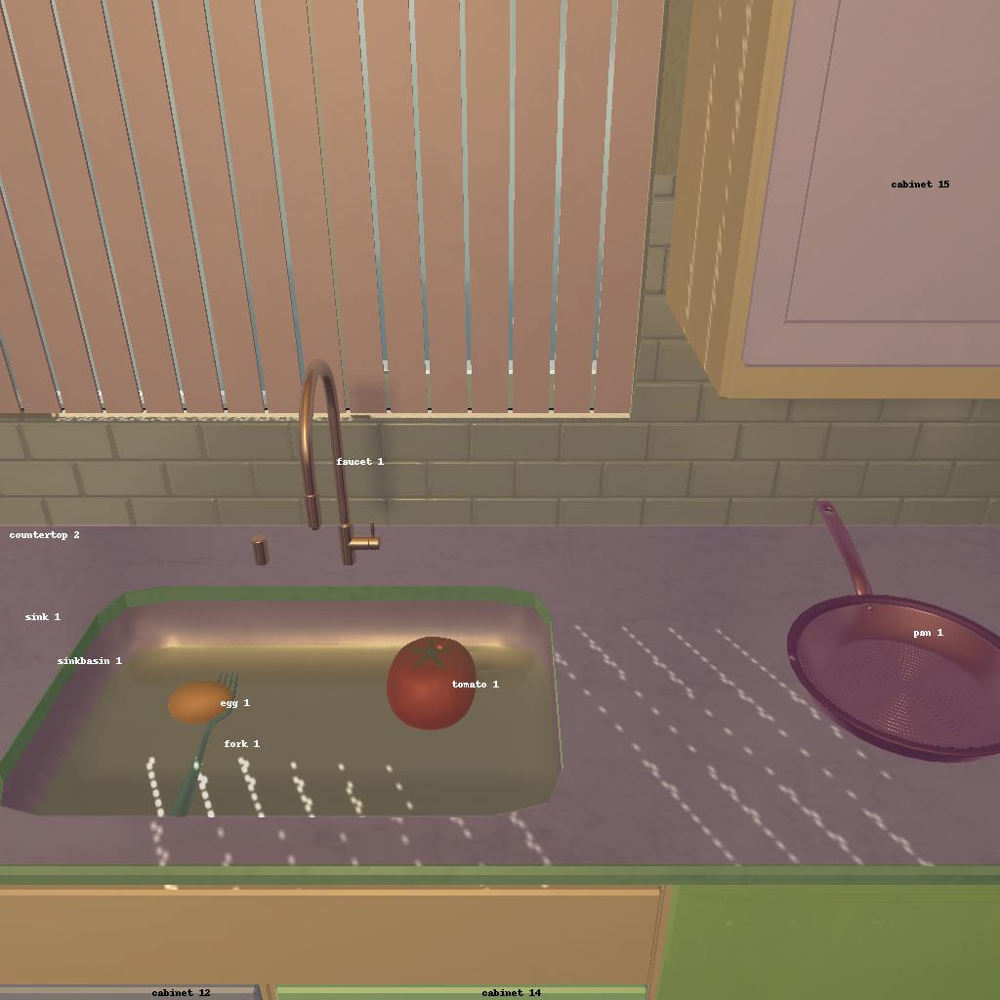

---------------------------------------------------------task: 29---------------------------------------------------------
--------------------------------------------------------------------------------------------------------------------------------------------------------------------
--------------------------------------------------------------------------------------------------------------------------------------------------------------------
Step:--------------------------------------------------------------------------1-------------------------------------------------------------------------------
----------------------------------------
VLM Prompt:
Image1:
Image2:
**Instruction**
1. Analyze the provided image to identify all visible household objects, focusing on those relevant to the task description "find two tomato and put them in countertop."
2. Use the analysis of the image and the task hint "The agent must find an object of the desired type, pick it up, find the correct location to place it, put it down there, then look for another object of the desired type, pick it up, return to previous location, and put it down there with the other object." to answer the question: what is the most reasonable action in the choices for the task description "find two tomato and put them in countertop"?
4. Decide and write the answer using the template: The answer is: (i): , where i is the real number. If there is no desired object in the image, search every place based on **Initial Observation** to find the object. And if no one is exactly correct, choose a similar answer.
**Initial Observation**
You are in the middle of a room. Looking quickly around you, you can see cabinet (1-20), toaster (1), microwave (1), garbagecan (1), countertop (1-2), drawer (1-4), stoveburner (1-4), sinkbasin (1), sink (1), fridge (1), diningtable (1), coffeemachine (1)
**Answer Choices**
(1): go to cabinet 1
(2): go to cabinet 2
(3): go to cabinet 3
(4): go to toaster 1
(5): go to cabinet 4
(6): go to cabinet 5
(7): go to microwave 1
(8): go to garbagecan 1
(9): go to countertop 1
(10): go to drawer 1
(11): go to cabinet 6
(12): go to cabinet 7
(13): go to drawer 2
(14): go to stoveburner 1
(15): go to stoveburner 2
(16): go to countertop 2
(17): go to cabinet 8
(18): go to cabinet 9
(19): go to cabinet 10
(20): go to drawer 3
(21): go to drawer 4
(22): go to stoveburner 3
(23): go to stoveburner 4
(24): go to cabinet 11
(25): go to cabinet 12
(26): go to cabinet 13
(27): go to cabinet 14
(28): go to sinkbasin 1
(29): go to cabinet 15
(30): go to fridge 1
(31): go to cabinet 16
(32): go to cabinet 17
(33): go to cabinet 18
(34): go to cabinet 19
(35): go to diningtable 1
(36): go to coffeemachine 1
(37): go to cabinet 20
(38): take pan 1 from sink 1
(39): take tomato 1 from sink 1
(40): take faucet 1 from sink 1
(41): take egg 1 from sink 1
(42): take fork 1 from sink 1
(43): examine sink 1
**Answer**
Let's think step by step by following the instructions.
----------------------------------------
----------------------------------------
Original Response:
The task description is to "find two tomatoes and put them on the countertop." From the initial observation, we know the possible locations of objects in the room.
In Image 1, we can see a tomato in the sink labeled "tomato 1." Therefore, the first action would be to pick up this tomato.
In Image 2, the tomato is still in the sink, but now there's also an egg labeled "egg 1." Since the task is to find tomatoes, we will ignore the egg.
The most reasonable action from the choices would be to pick up the tomato from the sink, as it is the object we are looking for.
The answer is: (39): take tomato 1 from sink 1.
----------------------------------------
----------------------------------------
>>> Refine Original VLM Response and Get Pure Action: take tomato 1 from sink 1
----------------------------------------
-----------------------------------------------------------------
Running time: 7.867473840713501 seconds
Total Money: 14.340830000000004
-----------------------------------------------------------------
-----------------------------------------------------------------
Text Observation:You pick up the tomato 1 from the sink 1.
-----------------------------------------------------------------
UNSUCCEED